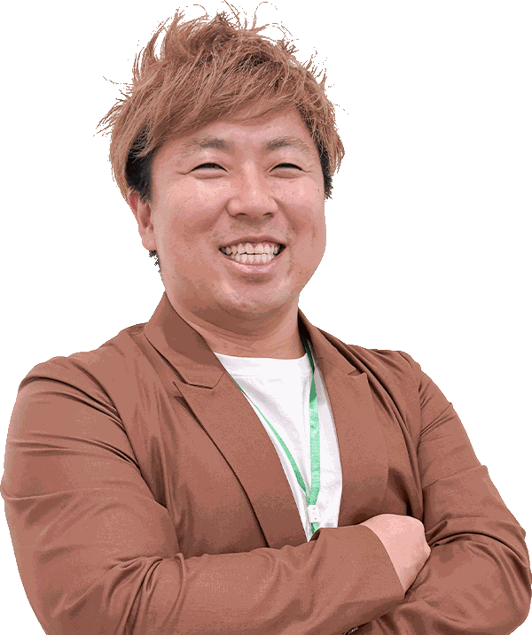
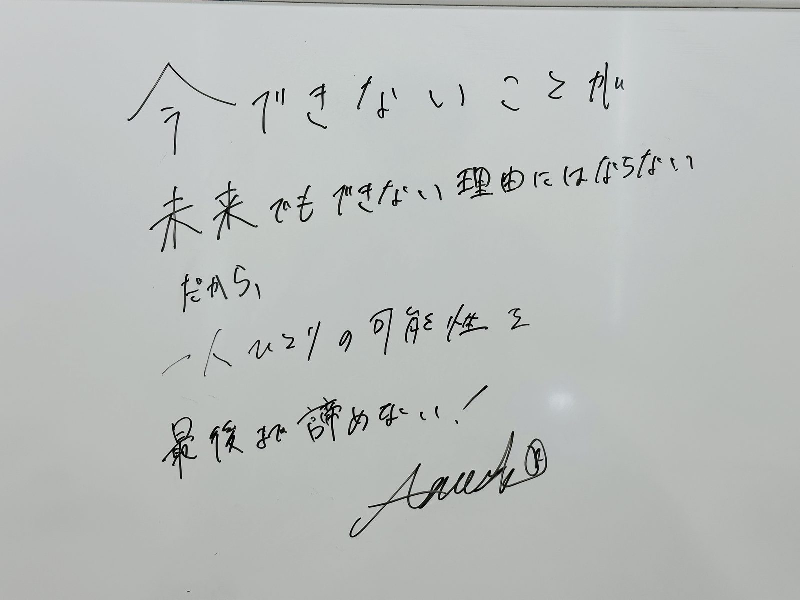

一人ひとりの可能性を、最後まで諦めない。

子どもたちには、一人ひとりに未来があります。
行きたい大学がある。
学びたいことがある。
いつか就きたい仕事がある。
まだ言葉にはできなくても、心の中に思い描いている未来がある。
私は、そんな子どもたちが、夢や希望を持ったまま大人になってほしいと願っています。
でも、夢に向かう道は、いつも順調とは限りません。
どれだけ努力しても、思うように成績が伸びないことがあります。
周りの友達と自分を比べて、焦ることもある。
模試の判定を見て自信をなくしたり、
と、夢そのものを諦めそうになる瞬間もあります。
大学受験に携わっていると、そんな場面に何度も出会います。
だからこそ私は、
「今できていない」ということだけで、その子の未来まで決めたくありません。
今はできないことがあってもいい。
遠回りすることがあってもいい。
立ち止まってしまう日があってもいい。
大切なのは、その場所から、
を一緒に考えることだと思っています。
もちろん、私たちは大学受験の塾です。
だから、ただ優しく寄り添って、
「大丈夫だよ」
「きっとなんとかなるよ」
と言うだけでは、その子の夢を本当に大切にしていることにはならないと思っています。
大学受験には、結果があります。
目標と現在地に大きな差があるなら、その事実と向き合わなければならない。
基礎が足りないなら、基礎に戻る。
理解が曖昧なら、もう一度根幹から学び直す。
演習量が足りないなら、必要な量を積み重ねる。
学習方法が合っていないなら、やり方そのものを変える。
そして、ときには本人にとって耳の痛いことを伝えなければならないこともあります。
それでも伝えるのは、
その子の夢を、本気で叶えたいと思っているからです。
私は、「寄り添う」という言葉を、ただ優しくすることだとは考えていません。
一緒に喜ぶことも寄り添うこと。
苦しいときにそばにいることも寄り添うこと。
そして必要なときに、
と伝えることも、寄り添うことだと思っています。
優しさと厳しさのどちらかを選ぶのではなく、その子の未来にとって何が必要なのかを考え続ける。
それが、私たちが大切にしたい向き合い方です。
ガリレオが理系教育で大切にしているのも、この考え方です。
理系科目は、ただ問題数を増やせば伸びるわけではありません。
公式や解法の意味を理解しないまま、闇雲に100問、200問と解いても、問題の形が変わった途端に手が止まってしまいます。
一方で、一問一問を丁寧に理解することばかりに時間を使い、十分な演習量を確保できなくても、入試で自力で解ける力にはつながりません。
だからガリレオでは、
「質を担保しながら、必要な量を積み重ねること」
を大切にしています。
授業では、
なぜこの公式を使うのか。
なぜこの考え方になるのか。
その背景には、どのような原理や仕組みがあるのか。
問題の根幹まで丁寧に掘り下げる。
そして、そこで理解したことを毎日の学習で繰り返し使い、自分の力へと変えていく。
深く理解し、十分に解く。
その積み重ねによって、
これが、私たちが目指している理系教育です。
大学受験は、人生のすべてではありません。
でも、自分で決めた目標に向かって努力する経験は、その先の人生にも残っていくものだと思っています。
できなかったことが、少しずつできるようになる。
分からなかったことが、分かるようになる。
逃げたくなったときにも、もう一度机に向かってみる。
そして、
と思える瞬間が少しずつ増えていく。
私は、合格だけではなく、そんな経験も子どもたちに残してほしいと思っています。
いつかガリレオを卒業した生徒たちが大人になったとき、
大学で学んでいたり、
やりたかった仕事をしていたり、
また新しい夢を見つけていたり。
それぞれの場所で、自分なりの未来を歩いている。
そんな姿を想像しています。
その未来のために、私たちが今できることは何なのか。
それを考え続けることが、教育に携わる私たちの責任だと思っています。
今、成績が思うように伸びていなくても。
模試の判定が良くなくても。
一度失敗したとしても。
それだけで、その子の未来まで決まるわけではありません。
だから私たちは、
できない理由を探して終わるのではなく、
「どうすれば、できるようになるのか」
を考え続けます。
夢を持つことを諦めてほしくない。
そして、夢をただ応援するだけでも終わりたくない。
夢を叶えるために必要な「今」を、一緒につくっていく。
一人ひとりの可能性を、最後まで諦めない。
そして、子どもたちが夢や希望を持ったまま、その先の未来へ進んでいけるように。
ガリレオを、そんな挑戦を支えられる場所にしていきたいと思っています。

教室のホワイトボードに、菅野が生徒たちへ向けて書いたメッセージ。